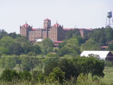

Established in 1976 by Trinity Episcopal Cathedral, and sponsored by the Arkansas Interfaith Conference of Churches and Synagogues, Choir Camp offers an intensive music program with classes in choral singing, handbells, liturgy, Broadway song & dance, history, poetry and art. This camp aims to provide a healthy balance between work and play.
|  |
| Subiaco |
Choir Camp is hosted each year by Subiaco Abbey and Academy, in Subiaco, Arkansas. Excellent amenities including air-conditioned dorms and rehearsal halls, Olympic-sized pool, beautiful countryside and grounds, and an exceptionally beautiful church and pipe organ all help facilitate the lessons, worship, and recreational activities (include swimming, games, arts & crafts, movies and dances) during camp.
The camp is open to students who have completed 3rd grade up through those in the 12th grade. No prior choral experience or membership in a choir is necessary. Only a love of singing and music is required!
This year's camp staff is made up of over thirty talented and gifted lay people and clergy.
| Sunday, : Camper Arrival | ||
| 2 - 4 PM: Campers are asked to arrive on Sunday afternoon, between 2 and 4 PM. | ||
Come join us, as well, for a Festival Day on the last day of camp (Saturday). Bring a friend and enjoy a musical day in the beautiful mountains of Arkansas! |
||
| Saturday, : Festival Day! | ||
| 9:40 AM : | Holy Eucharist in the Abbey Church | |
| 11:30 AM : | Picnic on the Abbey Grounds (please bring some to share) |
|
| 12:30 PM : | Broadway show in Centenary Hall Theatre | |
| 1:30 PM : | Head for home! | |
For information about registering and costs, visit our Registration Forms and Online Payment page.
Enrollment is limited to 120 campers, so please reserve a place early!!
| Postal Mail | AIC Choir Camp ℅ Charlie Rigsby 1011 Country Club Road Arkadelphia, AR 71923 |
| Telephone | Charlie Rigsby: (479) 409-5679 |
| cr273@aol.com |